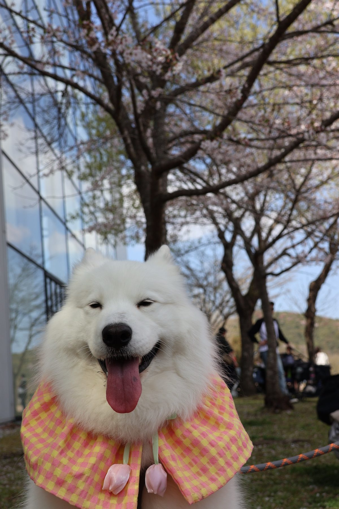

Daisy（デイジー）
サモエド
メス
九州在住
福岡生まれのサモエド犬。ふわふわの白い毛と笑顔が自慢。九州中のドッグランや自然スポットを一緒に巡っています。大型犬ならではの視点で、本当に楽しめるスポットだけを厳選してご紹介します。
📖 サイトのコンセプト
「大型犬と一緒に九州をもっと楽しみたい」という想いから生まれたガイドサイトです。
小型犬向けの情報は多いですが、大型犬（特にサモエドのような大きなワンちゃん）が本当に楽しめるスポットの情報は少ないもの。このサイトでは、実際にDaisyと訪れた場所を中心に、大型犬目線でリアルな情報をお届けします。
🌿
スポット36件
九州全域の犬連れOKスポット
🏨
宿17件
大型犬OKの宿を厳選
⛺
アウトドア25件
キャンプ・ハイキング等
💰 収益化について（アフィリエイト開示）
当サイトは以下のアフィリエイトプログラムに参加しています：
- 楽天アフィリエイト：楽天トラベル・楽天市場の商品リンク
- Google AdSense：Google広告（申請準備中）
アフィリエイトリンクを経由してご購入・ご予約いただいた場合、当サイトに紹介料が支払われることがあります。これはユーザーの購入価格には影響しません。掲載情報はアフィリエイト収益に関わらず、実際の体験に基づいて公正に選定しています。